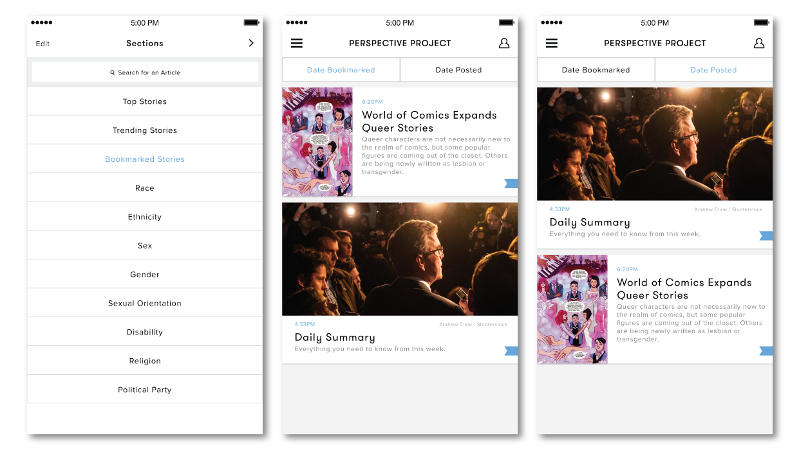

Perspective Project
This particular project has been on my list of ideas for quite a while now. With the optimism to promote empathy and with a little extra time, I set out to create a concept application that would serve as a resource that promoted understanding and discussion. To that extent, 'Perspective Project' is a concept app for an imaginary, digital newspaper company that specializes in identity politics. The idea behind this application was to design a simple and well-branded media outlet that focused on readers who would utilize this platform as a primary source for socio-political news.
Read About the Process See Prototype
